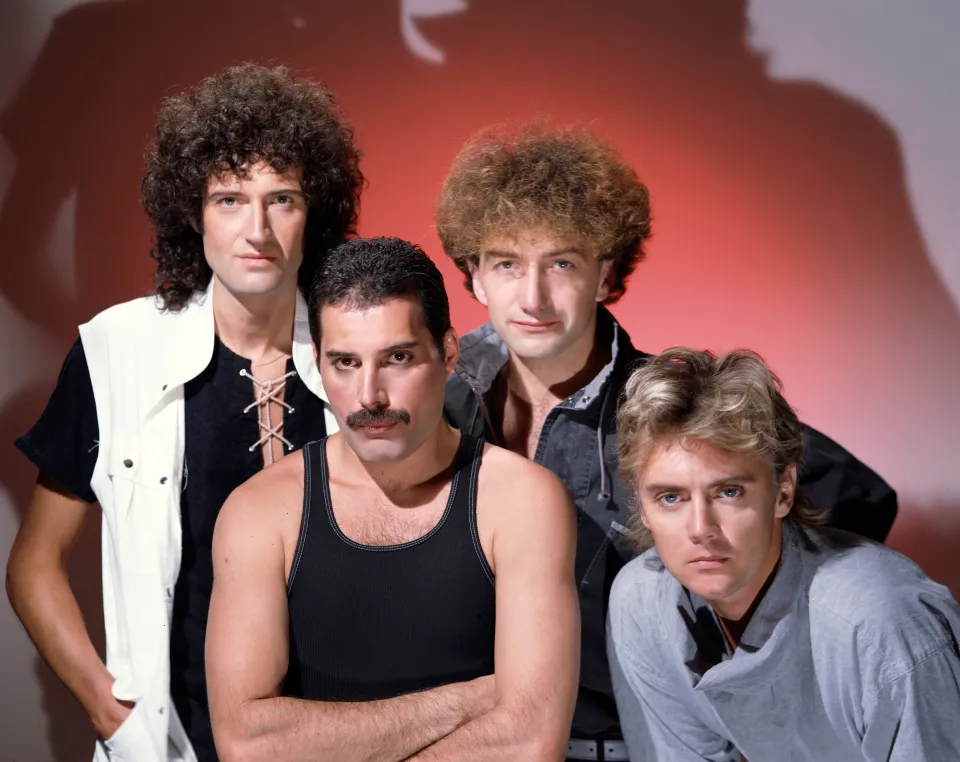

Why Queen
Why is Queen the best?
Queen is one of the greatest rock bands of all time due to their innovative and diverse musical style, powerful and unique vocal performances by Freddie Mercury, and their ability to create anthemic and timeless songs. The band's influence on rock music, their theatrical live performances, and their ability to blend different genres such as rock, opera, and pop have also contributed to their reputation as one of the greatest rock bands.